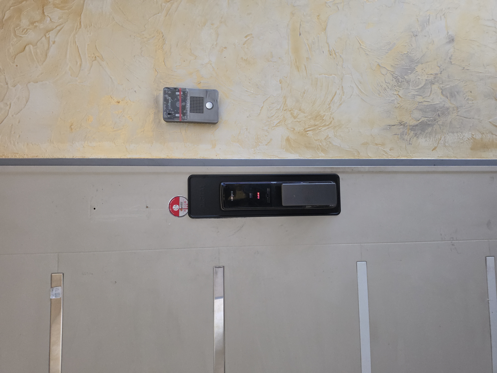
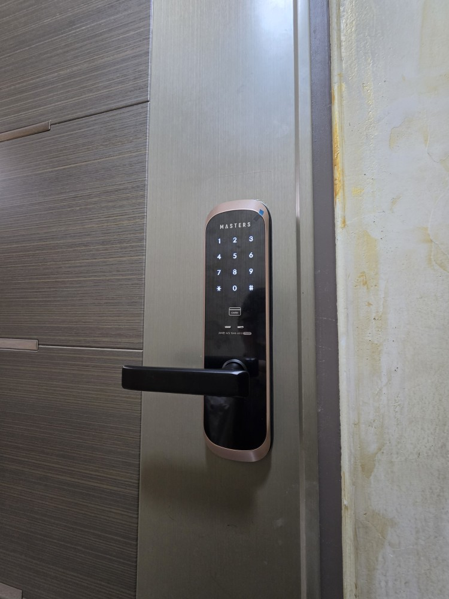
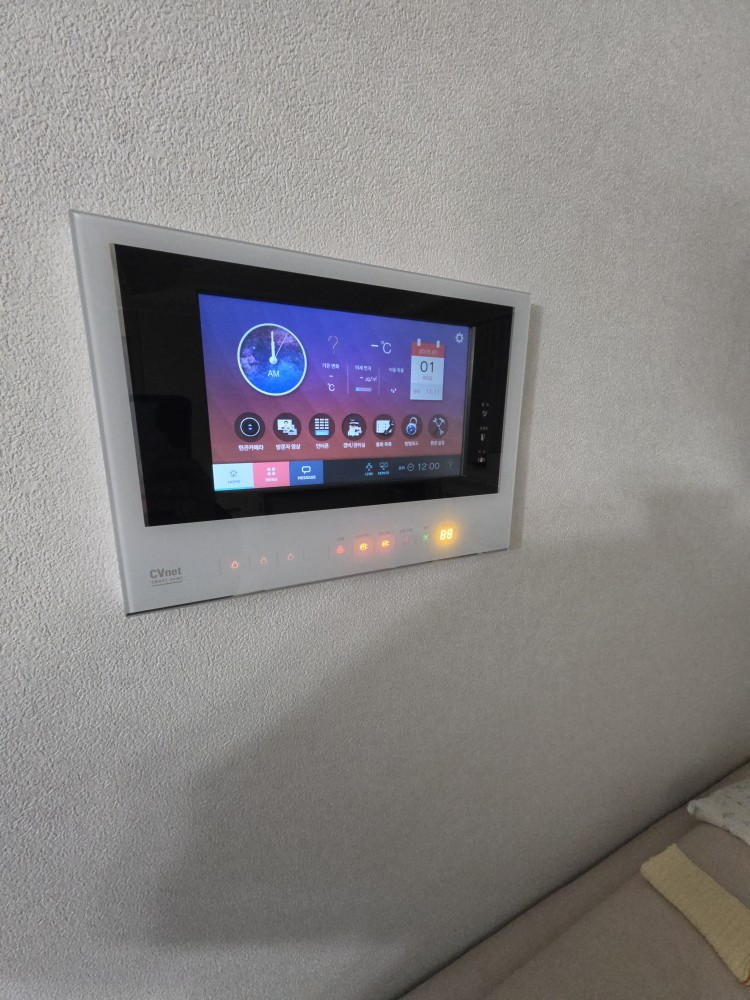
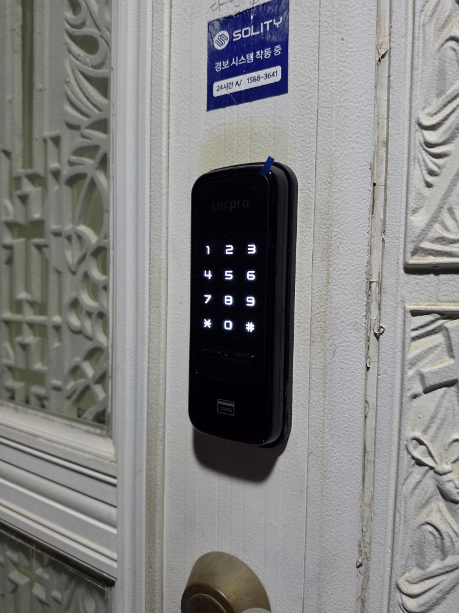
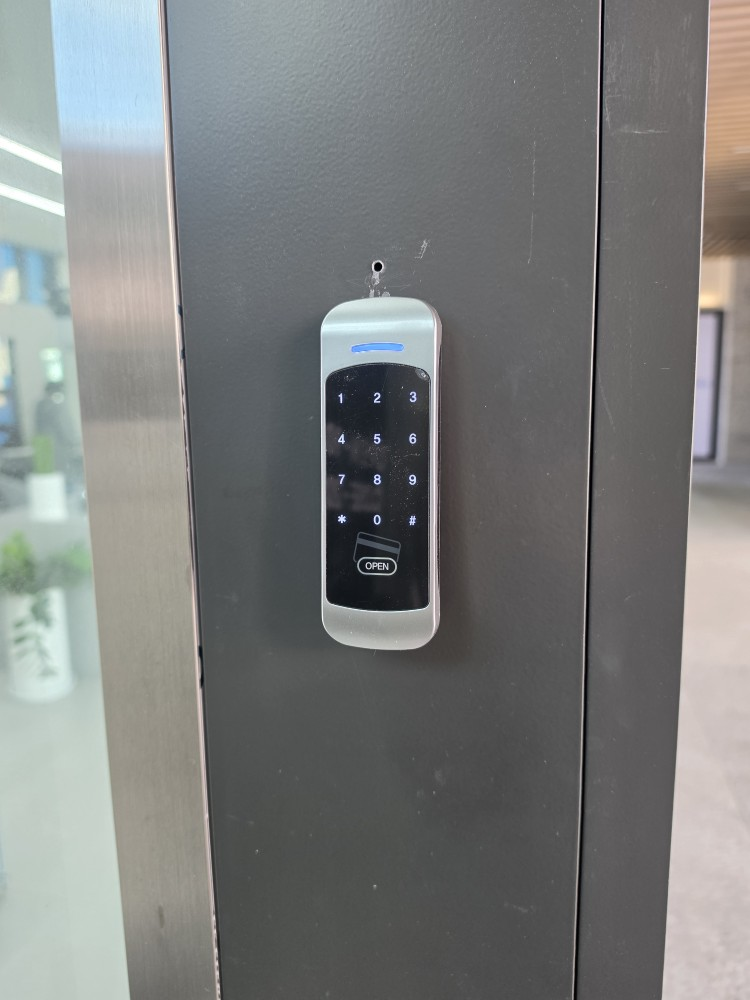

아파트 추천 1위푸시풀 프리미엄 도어락
- 삼성 · 직방 · 솔리티 정품 최신 라인업
- 당기고 밀어 한 번에 여는 편리한 출입
- 기존 타공 흔적 가리는 전용 보강판 포함
- 비디오폰 무선 문열림 수신기 연동 지원
구리 수택동·인창동·갈매동·토평동과 중랑구 망우동·면목동·상봉동, 하남 덕풍동·신장동을 비롯한 수도권 전지역 출장! 오래된 비디오폰과 구형 인터폰 교체는 물론, 거실 월패드에서 현관문을 여는 무선 문열림 연동 셋팅, 전 브랜드 무파손 개문, 슬라이드 자동문 번호키까지 베테랑 엔지니어가 직접 해결합니다.
 시공 전 · 노후 기기 및 구형 배선
시공 전 · 노후 기기 및 구형 배선
 시공 후 · 신형 교체 & 문열림 연동 완료
시공 후 · 신형 교체 & 문열림 연동 완료
아래 5가지 내용을 적어 보내주시면 우리 집 호환 모델과 출장비 포함 확정 견적을 바로 안내해 드립니다.
현장 배선 상태부터 교체한 모델명, 문열림 연동 셋팅 내용까지 투명하게 기록합니다.
모든 도어락 제품은 거실 비디오폰(월패드) 무선 문열림 모듈 연동이 가능합니다.

아파트 추천 1위
잔고장 적은 베스트셀러
동시 교체 인기 세트
전세집 · 상가 유리문
상가 · 사무실 · 무인매장구리 수택동·인창동·토평동 및 중랑구 망우동·면목동·상봉동, 하남 덕풍동·신장동 등 구축 아파트·빌라에 매립된 대형 인터폰을 떼어내면 벽면에 큰 네모 구멍이 남습니다. 도어마스터는 현장 매립함 규격에 딱 맞는 전용 아크릴·스틸 마감판(보강판)을 준비해 벽지 훼손 없이 새 제품처럼 깔끔하게 덮어드립니다.
💡 현재 사용 중인 비디오폰 전체 모습과 현관문 사진을 문자로 보내주시면 정확한 호환 모델과 마감판 규격을 바로 안내해 드립니다.
| 기존 인터폰 형태 | 시공 및 마감 방식 |
|---|---|
| 소형 벽걸이형 (4.3인치급) | 기존 브라켓 교체 후 벽면 노출 없이 1:1 밀착 설치 |
| 구형 대형 매립형 (7~10인치급) | 매립 박스 맞춤 제작 전용 대형 마감판 결합 후 설치 |
| 도어락 문열림 연동 추가 시 | 비디오폰 내부 무선 송신기 + 도어락 수신기 주파수 매칭 |
단순히 달아드리고 끝내지 않습니다. 사용하시는 동안 불편함이 없도록 현장에서 직접 셋팅해 드립니다.
현관 호출 시 거실 비디오폰 화면과 통화 음질을 확인하고, [문열림] 버튼을 눌렀을 때 현관 도어락이 즉시 열리는지 함께 테스트합니다.
보안을 위해 초기 비밀번호를 원하시는 번호로 즉시 변경해 드리며, 가족·직원용 카드키와 지문 등록 방법을 현장에서 직접 안내합니다.
방화문 처짐이나 문틀 간격을 정밀하게 맞추어 문을 닫았을 때 잠금쇠(데드볼트)가 걸림 없이 부드럽게 잠기는지 확인합니다.
건전지 방전 시 외부 9V 건전지 비상 개문법과 내부 이중잠금 기능, 슬라이드 자동문 번호키의 영업/야간 모드 전환법을 안내해 드립니다.
방화문 흠집 없는 정밀 무파손 개문과 깔끔한 교체 과정을 짧은 영상으로 보실 수 있습니다.
비밀번호 오류, 터치패드 고장, 내부 잠금장치 걸림 시 도어락과 방화문 손상 없이 안전하게 열어드립니다.
수택동·인창동·갈매동·토평동과 중랑구 망우동·면목동·상봉동·하남·남양주·서울·경기·인천 출장 지원